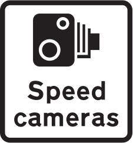

Често срещани знаци и значението им

Място за паркиране
Име на английски Parking place
Какво означава този знак?
Обозначено място, където превозните средства могат да паркират.
A designated place where vehicles may park.
Изтегли от App StoreЧесто срещани знаци и значението им
Име на английски Parking place
Обозначено място, където превозните средства могат да паркират.
A designated place where vehicles may park.
Изтегли от App StoreБезплатно: 3 теми със знаци и 25 думи за частите на колата. Signo Pro отключва всичко.
 Начало на зона за контролирано паркиранеEntrance to controlled parking zone
Начало на зона за контролирано паркиранеEntrance to controlled parking zone Само за притежатели на разрешителноPermit holders only
Само за притежатели на разрешителноPermit holders only Само за притежатели на карта за хора с уврежданияDisabled badge holders only
Само за притежатели на карта за хора с уврежданияDisabled badge holders only
Камери за контрол на скоросттаSpeed cameras Спри — полицияStop - Police
Спри — полицияStop - Police Място, от което започват да се прилагат правилата за автомагистралаPoint at which motorway regulations start to apply
Място, от което започват да се прилагат правилата за автомагистралаPoint at which motorway regulations start to apply